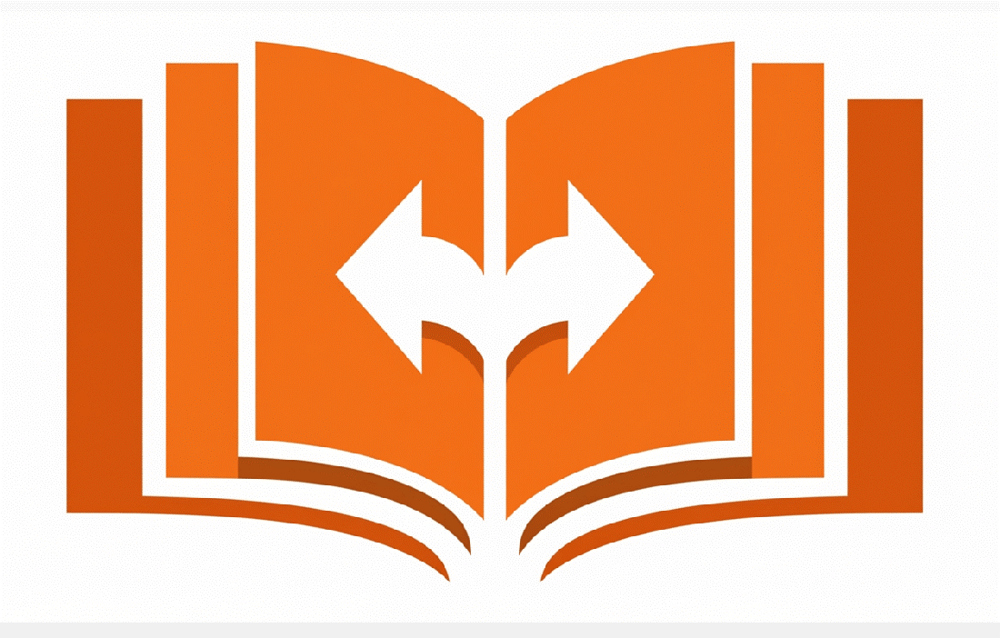
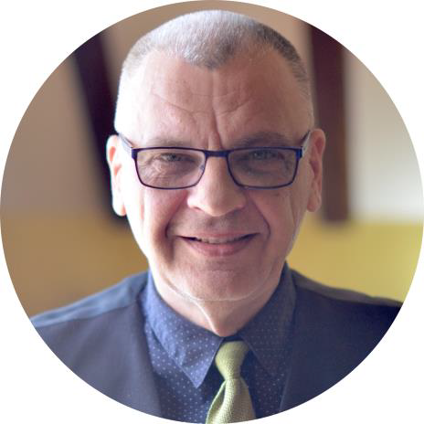

Professional English – Serbian Translator
Professional English–Serbian Translator and Interpreter with over 15 years of full-time and 7 years of freelance experience. Specialized in technical and legal translation, editing, and quality assurance for international clients.
Extensive experience working with international organizations including EULEX (European Union Rule of Law Mission in Kosovo) and KFOR (NATO Mission in Kosovo), translating materials related to law enforcement, customs, judiciary, and defense.
June 2023 – Present
Translation and editing of technical and corporate documents using WebCATT, MemoQ, and Trados Studio.
August 2018 – Present
Translation and quality assurance of technical, marketing, and legal materials. Completed translation of the Cummins Inc. website.
August 2010 – January 2018
Translation and interpretation for police, customs, and judiciary documentation and meetings.
B.A. in Management – Faculty of Management
Informatics Engineer – Higher School for Applied Informatics
Address: Pirotska 5, Nis 18108, Serbia
Phone: +381 66 515 0986